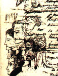
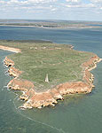
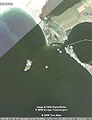
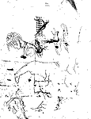

К 210-летию А.С. Пушкина!
Гений с одного взгляда открывает истину, а истина сильнее царя.
Гениальность вневременное явление. Талантливое может устаревать, гениальное – не стареет. Гениальное материально (формой) принадлежит своему времени, но духовно (содержанием) легко прозревает прошлое и предугадывает будущее. Его проявление в виде духовной материи записано в памяти земли и особенно сильно там, где побывал гений. Попробую доказать сказанное на примере создания Пушкиным «Сказки о царе Салтане».
Занимаюсь исследованием связи жизни и творчества А.С. Пушкина с нашим краем с 1980 г. До меня в научном плане никто эту проблему подробно не изучал ни у нас, ни в столицах тогдашнего СССР. Разумеется, в академическом труде М.А Цявловского «Летопись жизни и творчества А.С. Пушкина» частично этот вопрос был рассмотрен и стал отправным в плане уточнения и дополнения приведенных сведений. В частности, там сообщалось о 5-ти проездах Пушкиным нашего города. Материалы по этой проблеме мною изучались в 45 архивах и библиотеках 10 городов тогдашней страны. По ходу этой работы удалось восстановить начало литературной жизни Николаева. Определить, что первым поэтом был С.С. Бобров, прозаиком – П.А. Захарьин, а книгоиздателем - С.И Селивановский, позднее книгоиздатель Пушкина. В Черноморской Адмиралтейской типографии в Николаеве в 1798 г. были изданы поэма Боброва «Таврида» и «Синопсис» Захарьина, оказавшие влияние на творчество Пушкина. Пишу об этом потому, что авторы статей в нашей уникальной энциклопедии «Николаевцы» («Возможности Киммерии», 1999) «забыли» сделать ссылки на мои пионерские статьи о перечисленных здесь лицах и тем самым присвоили это себе. Упомянутая выше «Летопись» Цявловского была мною существенно уточнена также в части того, что А.П. Зонтаг, племянница В.А. Жуковского, во время пребывания Пушкина на юге жила не в Одессе, а в Николаеве. Мне удалось найти её переписку с Жуковским и альбом в Пушкинском Доме (ИРЛИ РАН) в Петербурге. Первая писательница нашего города приехала в Николаев из Севастополя летом 1822 г. и жила здесь безвыездно по семейным обстоятельствам до осени 1825 г., после чего переехала в Одессу. Муж её Е.В. Зонтаг был капитаном яхты «Утеха» Главного командира Черноморского флота адмирала А.С. Грейга.
В 2001 г. в Николаеве издана моя книга «А.С. Пушкин и Николаевский край», в которой впервые в пушкиноведении сообщено о 43-х темах связи поэта с нашим краем, а также о неучтённом академической наукой тайном приезде Пушкина в Николаев в начале октября 1823 г. Удалось установить, что в Николаев поэт приезжал не 5, а 7 раз. Причём, в тайный приезд он пробыл в нашем городе целую неделю. Здесь он написал строфы XXV-XXXV из 1-й главы «Евгения Онегина», посвящённые женской красоте. Ещё один, неучтённый приезд был установлен на основании его автобиографических записей. В начале марта 1821 г. из Каменки он возвращался в Кишинёв через Николаев и Одессу. Отсюда он заезжал в Херсон для выяснения того, что помнят старики о его деде И.А. Ганнибале, который строил их город. Вернувшись сюда, он уехал в Одессу. Оказалось, что тайный приезд в наш город поэт описал в «Сказке о царе Салтане». Но обо всём по порядку.
В начале июля 1823 г. Пушкин перебрался из Кишинёва в Одессу и пропадал в порту, где познакомился со многими николаевскими моряками. В архиве ЦГА ВМФ мне удалось найти шканечный журнал военного брандвахтенного корвета «Шагингирей», стоявшего на вахте в Одесском порту с ранней весны до глубокой осени, а зимовал он в Николаеве. В журнале вёлся учёт прихода и ухода всех военных кораблей, отмечалось состояние погоды, сила и направление ветра. Из этих записей выяснилось, что чаще всех сюда заходил катер «Сокол», которым командовал А.И. Казарский. В Одессе с 15 по 24 сентября 1823 г. (даты по старому стилю) находился николаевский бриг «Мингрелия», тот самый на котором Пушкин вместе с семейством Раевских в ночь с 15 на 16 августа 1820 г. переезжал из Феодосии в Гурзуф. Нетрудно представить сколь радостной для поэта была эта встреча. Здесь он познакомился с николаевцами, моряком-поэтом Е.П. Зайцевском и К.И. Далем. Мог бы тогда познакомиться с астрономом К.Х. Кнорре и В.И. Далем, они тоже плавали на «Мингрелии». Но Кнорре сошел перед этим рейсом на берег в Николаеве, а В.И. Даля ещё в мае в Севастополе сняли с брига и отдали под суд, якобы за написание пасквиля (мною доказано, что пасквили были написаны не им, а его друзьями). Пушкин знал об этом и предсказал скорую гибель Карлу Ивановичу Далю и А.И. Казарскому, зарисовав портреты и топор между ними, как символ расправы. Действительно, в 1828 и 1833 гг. соответственно обоих отравили в Николаеве. Это штрих к вопросу о пророчестве поэта.
С 23 по 26 сентября в Одессе находилась яхта «Утеха» и здесь поэт познакомился с Е.В. Зонтагом. Бриг «Мингрелия» и яхта «Утеха» из Одессы должны были вернуться в Николаев на зимовку. Вероятно, Егор Васильевич предложил Пушкину проехаться на корабле к Анне Петровне Зонтаг в Николаев. Для тайной отлучки создалась весьма удобная ситуация. В начале октября в Тульчине проводились манёвры 2-й армии, в которых должен был принять участие Александр I. По этому случаю М. Воронцов и Николаевские власти должны были отлучиться для встречи с царём. Как узнала об этой поездке Пушкина Каролина Собаньская, бывшая личным осведомителем царя, неизвестно. Возможно, поэт сам проболтался на радостях, – в это время он приударял за красавицей. Она же напросилась в эту поездку, рассчитывая из Николаева проехать в Тульчин и сообщить царю о тайной отлучке поэта из Одессы как о факте. Собаньская хорошо понимала цену этой информации, ибо о ней не знали власти, отвечавшие за поведение поэта. Воронцов из-за этого пострадал – в конце 1823 г. царь демонстративно обошёл его наградами и он недоумевал – за что?!
Итак, рано утром 26 сентября 1823 г. Воронцов выехал в Тульчин, а Пушкин с Собаньской отправились на яхте «Утеха» в Николаев. Мною доказано, что тайную поездку Пушкин описал иносказательно в «Сказке о царе Салтане». К сказке написаны 41 примечание, в которых разъяснено, что имел в виду поэт, которые опубликованы в моей книге «Пушкин и Николаевский край». Корабль «Утеха» имел вооружение брига, на корме были каюты для пассажиров – поэтому Гвидон, превращённый в комара, прилетел «На корму - и в щель забился». В так называемой первой масонской тетради Пушкин делает зарисовки портретов Зонтага и Собаньской, а рядом с ними записывает стихотворение «Завидую тебе, питомец моря смелый, Под сенью парусов и в бурях поседелый!». Егору Васильевичу было 49 лет, он с 13 лет начал службу на кораблях. Так что он, действительно, был поседелым питомцем моря, отчаянным корсаром и американцем по происхождению. Поэтому Пушкин обращается к нему: «Оставим берега Европы обветшалой». Строчку «Дай руку – для меня настал отрадный миг» он вычёркивает - слишком явно присутствие на корабле. По этой причине Пушкин при жизни это стихотворение вообще не публикует. При среднем ветре яхта обычно доходила в Николаев за 2-3 дня, а здесь разразился штиль. Об этом говорят отметки в шканечном журнале корвета «Шагингирей». В архивных делах Адмиралтейства приход из Одессы в Николаев брига «Мингрелии» и яхты «Утехи» отмечены через 13 дней! Штиль ломал все планы Собаньской («царицы»), она могла не успеть к царю: «Бочка по морю плывёт. Словно горькая вдовица, Плачет, бьётся в ней царица». Поэтому на полдороге, в Очакове, 1 октября 1823 г. её и Пушкина свезли на лодке на берег и далее они на перекладных добрались до Николаева. В этот день отмечался один из великих праздников Православной церкви Покров Пресвятой Богородицы («Лишь ступили за ограду Оглушительный трезвон Поднялся со всех сторон»). Здесь поэт остался у А.П. Зонтаг, а Каролина Собаньская помчала в Тульчин. А.П. Зонтаг жила в Архитекторском доме (ныне ул. Гражданская, 6) и каждый день Пушкин, вероятно, взяв подзорную трубу («Князь Гвидон трубу наводит»), ходил в сторону нынешнего Морпорта смотреть: не пришли ли корабли? Приход в штиль кораблей в сказке описан довольно точно: «Не шумит оно, не хлещет, Лишь едва-едва трепещет. И в лазоревой дали. Показались корабли». «Утеха» стала на якорь у Малой Коренихи только 8 октября. В этот приезд, вероятно, Пушкин познакомился в Николаеве с К.Х. Кнорре, а В.И. Даль в это время сидел на Гаупвахте, здание которой находилось на месте памятника Ленину у Горисполкома. Поэт, дождавшись приезда Е.В. Зонтага, уехал в Одессу на перекладных 8 октября 1823 г. Следует отметить, что это было самое длительное пребывание Пушкина в Николаеве – целых 7 дней! За это время поэт написал здесь лучшие строки, посвященные женской красоте: строфы XXV-XXXV строфы из 1 главы «Евгения Онегина». И это неслучайно, ибо для Пушкина город Николаев был городом его утаенной любви Софьи Станиславовны Потоцкой. Поэт знал, что Г. Потемкин создавал Николаев для своей возлюбленной, красавицы-фанариотки, Софьи Константиновны Потоцкой, которая приходилась матерью возлюбленной им Софии. Здесь в сентябре 1820 г. он со своей Софией бывал в Николаеве. Отсюда их пути из Симферополя разошлись, поэт поехал в Кишинев, а она – в Тульчин. 
Таким образом, Пушкин 30 сентября и 1 октября при столь медленном продвижении «Утехи» мог детально рассмотреть остров Березань и даже съездить на него на лодке. В «Сказке о царе Салтане» поэт так описал остров: «В море остров был крутой, Непривальный, не жилой; Он лежал пустой равниной; Рос на нём дубок единый» . Все характеристики описания острова Буяна-Березани настолько точны, что не оставляют сомнения в том, что Пушкин его не только видел, но и как утверждает он в конце сказки – «Я там был…». Известно, что со времен плавания из варяг в греки на Хортице и Березани были ритуальные дубы, которым приносились жертвоприношения язычниками. Пушкин об этом знал. Возможно, этот дуб в то время ещё и сохранился, так что поэт мог его видеть. Видел он и Лукоморье, которое окружает остров Березань. Оно хорошо просматривается на снимке из космоса . Царство славного Салтана поэт расположил в Николаеве,- если бросить бочку здесь, то течением её вынесет к острову Березани-Буяну. Да и корабли плыли в царство Салтана мимо острова Буяна на восток. В черновой записи народной сказки нет ничего про дядьку Черномора и его 32 богатырях – это явная привязка к Черному морю и адмиралу Грейгу. Ну, а моряков Пушкин знал вдовое больше, это сказачное число. Можно предположить, что после этой поездки Пушкин ещё дважды побывал в Николаеве. В сказке говорится, что Гвидон тайно посещал царство Салтана в виде комара, мухи и шмеля. Возможно, его дважды сюда посылала Е.К. Воронцова («царевна Лебедь») по каким-то своим поручениям до конца 1823 г. Но, главное, вероятно, состоит в том, что Пушкин почувствовал дух Гомера, похороненного на Березани и витавшего над островом. Поэтому остров Буян в сказке Пушкина – царство Поэта-Гвидона.
Далее события развивались в соответствии с высказыванием Пушкина о том, что «Гений с одного взгляда открывает истину…». Поэт уже в январе 1824 г. догадался о том, что Каролина Собаньская его выдала и ему это сулит либо ссылкой в Сибирь, либо ещё более страшным наказанием. Об этом свидетельствует рисунок портрета Собаньской рядом с подвешенным человечком над костром, распаленным чертями, а над повешенным витает женский образ.
Ещё более ярким свидетельством этого является его письмо брату Льву в Петербург, написанное в конце января 1824 г.: "Ты знаешь, что я дважды просил Иван Ивановича о своём отпуске чрез его министров – и два раза последовал всемилостивейший отказ. Осталось одно – писать прямо на его имя – такому-то, в Зимнем дворце, что напротив Петропавловской крепости, не то взять тихонько трость и шляпу и поехать посмотреть на Константинополь. Святая Русь мне становится невтерпёжь. Ubi bene ibi patria (Где хорошо, там и отечество)". Пушкин знал, что все письма его перлюстрируются,- значит, это был явный вызов царю: тебе доложили о моей тайной отлучке в Николаев, так знай, что я могу пойти дальше,- и покину отечество. Не дремал и Воронцов, обеспокоенный явной немилостью царя. Через своих друзей Н.М. Лонгинова («Сватья баба Бабариха»), секретаря императрицы Елизаветы Алексеевны, и А.А. Фонтона («Ткачиха»), сотрудника Министерства иностранных дел, приближённого к царю, он пытался выяснить причины его недовольства. Когда друзья и сам царь дали ему понять, что причина в Пушкине, то Воронцов тут же отослал его «на саранчу» в мае 1824 г. Поэт служил в Министерстве иностранных дел и потому не хотел ехать в эту командировку, но друзья уговорили. И он поехал не «на саранчу», а отмечать свой день рождения к Давыдовым в Каменку. Этому мы обязаны 5-му и 6-му посещению Пушкиным нашего города. Рукописи свидетельствуют: 23 мая 1824 г. он пишет в доме А.П. Зонтаг начало письма Татьяны к Онегину (3-я глава) и ещё одну строфу XXXIII к тем 10-ти из 1-й главы, что написал здесь в октябре 1823 г. Рядом с этими строками зарисованы портреты Грейга и его гражданской жены Юлии. Очевидно, Пушкин посетил их в нынешнем здании Музея судостроения и флота. Удалось выяснить, что лицейские друзья поэта В.Д. Вольховский и П.Л. Яковлев, тайно ехали к нему, чтобы предупредить его об интриге Воронцова. Они встретились на дороге, и он их вначале взял с собой в Каменку, а затем быстро вернулся с ними через Николаев в Одессу. У друзей поэта заканчивалось отпускное время. Пушкин по дороге уже сыпал эпиграммами. И на последней перед Николаевом почтовой станции Кандыбино записал: «Рыба не рак, Кандыба – дурак. Рак не рыба, Дурак – Кандыба. И так и сяк, Кандыба - дурак». Переночевав в доме Зонтаг с 30 на 31 мая, друзья выехали в Одессу. Именно, в Николаеве, где витал дух родившегося здесь Гомера, эманацию которого Пушкин, вероятно, почувствовал и написал парадоксальное стихотворение на античную тему: 
«Лишь розы увядают,
Амврозией дыша,
В Элизий улетает
Их лёгкая душа.
И там, где волны сонны
Забвение несут
Их тени благосклонны
Над Летою несут».
По моим исследованиям: Асфеделонов луг, Элизий, или Елисейские поля, Гомер размещал на Стрелке. Лето,- это Стикс, или река Ингул,– река забвения в Аиде, который отождествляется с городищем «Дикий Сад» (XIII-IX вв. до н.э.). Но, вернёмся к Пушкину.
В.Д. Вольховскому удалось выехать из Одессы незамеченным, а П.Л. Яковлева перехватила полиция с письмом Пушкина Кюхельбеккеру, в котором он нелестно отзывался о Библии. В результате, Яковлева сослали на службу в глухую провинцию, а Пушкина за это письмо, – в Михайловское, подальше от моря. Получив указание оставить службу и переехать под надзор в Михайловское, Пушкин был чрезвычайно взволнован и начал готовить побег из России. В.Ф. Вяземская, лечившая своих детей в Одессе, пыталась для него раздобыть денег. Но, вечером 31 июля 1824 г. Пушкин в своей коляске с дядькой Никитой Козловым въезжал уже в подворье Зонтагов. Здесь Пушкин, прощаясь с Черным морем, глядя на корабли, стоявшие у военной гавани между Стрелкой и Лагерным полем, пишет черновик стихотворения «К морю» - «Прощай свободная стихия…» - рядом рисует портрет А.П. Зонтаг. Спрашивается: почему поэту при ссылке в Михайловское нельзя было инкриминировать тайную поездку в Николаев? Да потому, что в этом случае раскрывался информатор – Каролина Собаньская. Возникает и второй вопрос: мог ли открыто Пушкин рассказать эту историю? Тоже не мог, ибо за всю свою жизнь он не обидел ни одной женщины. Оставалось одно – сочинить сказку.
В 1828-1830 гг. Пушкин снова встречается на светских раутах с Каролиной Собаньской и, вероятно, за этим возникают, как воспоминания о Березани,- «У лукоморья дуб зеленый…». Но эта строфа была внесена поэтом не в «Сказку о царе Салтане», а как пролог ко второму изданию сказки «Руслан и Людмила», которая посвящена С.С. Потоцкой, также связанной с нашим краем. В 1830 г. Отношения Поэта с Собаньской заметно активизируются, письма поэта с воспоминаниями о поездке морем не отправлены. Пушкин вписывает в альбом Собаньской посвящение «Что в имени тебе моём? Оно умрёт, как шум печальный Волны плеснувшей в берег дальный,..», как намёк на наш край и поездку морем. В, конце концов, поэт сочиняет «Сказку о царе Салтане», в которой описывает все обстоятельства тайной поездки. С 41-м примечанием, объясняющим подтекст сказки, можно ознакомиться в моей книжке «Неизвестное о Пушкине» (Николаев, Изд-во Ирины Гудым, 2005). Не буду говорить обо всех примечаниях, скажу только об одном. Не знаю почему, но никто из пушкинистов до меня не задался вопросом, что же обозначает имя Гвидон, которое относится к Пушкину и которого нет в народной сказке? Понятно, что Каролина Собаньская – это царица, а царь – это Александр I. Правда, не Султан, как в народной сказке, а Салтан, что в переводе с английского означает несолёный, т.е. пресный, неинтересный. На французском языке: Guidon – это брейд-вымпел. В Толковом словаре нашего земляка и моряка В.И. Даля сказано, что «брейдвымпел вывешивался на командирских кораблях», каковым и была яхта-бриг “Утеха”. Так что, сказки не было бы, если бы царица (Каролина Собаньская) не «родила» Гвидона (Пушкина), выдав тайну его поездки в Николаев царю,- «И роди богатыря Мне к исходу сентября», т.е. к 26 сентября – ко времени отхода яхты. Пушкин вписал своё имя в брейдвымпел яхты «Утеха» для того, чтобы мы через 170 лет раскрыли тайну его «Сказки о царе Салтане». Но, Пушкин не был бы Гением, если бы не предвидел и не предсказал того, кто же должен раскрыть эту тайну:
«У лукоморья дуб зеленый;
Златая цепь на дубе том:
И днём и ночью кот учёный
Всё ходит по цепи кругом;
Идёт направо – песнь заводит,
Налево – сказку говорит».
Так вот, в порядке подтверждения предсказаний Пушкина относительно Березани и самокритичной шутки по отношению к себе сообщаю, что являюсь котом по году рождения, учёным (живу на научную пенсию), ходящим и день, и ночь на цепи златой фамилии, который, идя направо, заводит песнь о Гомере, похороненном на острове Эе-Буяне-Березани, а налево – сказку говорит о тайном смысле «Сказки о царе Салтане».
Для нас, смертных, это всего лишь странное сближение, а чем же это было для Пушкина? Для Пушкина, и это уже лежит на грани мистики, «Сказка о царе Салтане» была ещё и прозрением тайной биографии Гомера. Или, говоря словами самого поэта,- «Он имел одно видение, непостижимое уму». Судите сами. Гомер, здесь и далее по моим исследованиям (см. мою книгу «Гомер. Имманентная биография», Николаев, 2001), родился в сентябре, Гвидон – в конце сентября. Гомер родился в г. Борисфениде, центр которого, предположительно, располагался в районе нашего Адмиралтейства, с которого начинается ул. Садовая. Гвидон – в доме А.П. Зонтаг (угол ул.ул. Гражданской и Никольской), соседним с Адмиралтейством. Гомер в 11 лет в результате дворцовых интриг вынужден был бежать на корабле отсюда и потом, в образе Геракла и Одиссея, тайно посещал родину. Гвидон, тайно в виде комара, мухи и шмеля, посещал царство Салтана. Гвидона после дворцовых интриг в бочке сбросили в царстве Салтана (Николаеве) и она оказалась на острове Буяне-Березане-Эе, где захоронен Гомер…
Как это ни парадоксально, но, вероятно, существует эманация исторической памяти земли, которую способны считывать интуитивно (бездоказательно) подлинные Поэты, которых Пушкин в «Медном всаднике» вывел под именем ЕВГения, т.е. Его Величества Гения. Прошло 210 лет со дня рождения Пушкина, тайна «Сказки о царе Салтане» разгадана в полном соответствии с предсказанием Пушкина о том, что «Гений с одного взгляда открывает истину, а истина сильнее царя».
А. Золотухин, председатель Пушкинского клуба